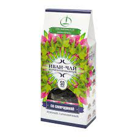

Иван-чай (кипрей) - это род многолетних растений семейства кипрейные, которые встречаются повсеместно в странах с умеренным климатом.
Из 14 видов растения наиболее широко используются два: иван-чай широколистный и иван-чай узколистный.
Первый произрастает на севере Северного полушария,в том числе в арктических областях.
Узколистый кипрей - самый популярный вид, который распространен по всей территории России и занимает огромные площади на Урале
и Алтае. Иван-чай по-другому называют “огненной травой”,“пожарником”, “скрипуном” и т.д. Также известен как копорский чай.
Иван-чай отличается богатым химическим составом. В него входят фосфор, калий, марганец, кальций, титан, цинк, натрий, медь, магний, селен, железо, молибден, бор.
В состав кипрея входят многие витамины (на 100 г продукта):
Чай из кипрея - один из самых древних и действительно полезных напитков на планете. Спектр микроэлементов кипрея просто уникален. Научно доказано, что Иван-чай по своим противовоспалительным свойствам превосходит все лекарственные растения.
Имея практически нулевую калорийность Иван-чай обогащает Ваше тело нужными витаминами и многими другими полезными веществами, помогая контролировать чувство голода. Иван-чай в сочетании с клюквой, мятой, листьями смородины и цветками василька повышает иммунитет, укрепляет организм в целом, активно борется с вирусами и бактериями, защищая и сохраняя молодость, активность и жизненную энергию. Смородина в сочетании с Иван-чаем является натуральным природным энергетиком: приводит организм в тонус и укрепляет иммунитет. Напиток оказывает укрепляющее воздействие на сердечнососудистую систему, стимулирует мозговую активность, повышает общий тонус организма. Иван-чай и чабрец положительно действует на нервную систему, выводит из стресса и хронической усталости.
